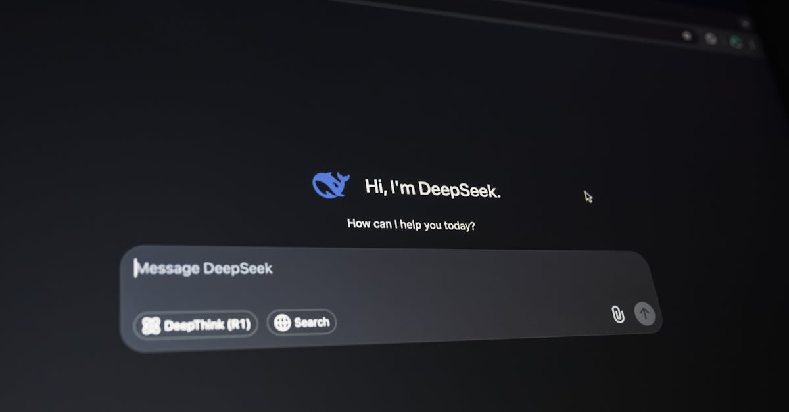

Meta et l'IA conversationnelle : une adoption massive
La nouvelle a fait grand bruit dans le monde de la technologie : Meta, le géant des réseaux sociaux, a annoncé que son intelligence artificielle générative est désormais à la base de plus de 10 millions de conversations par semaine. Ce chiffre impressionnant témoigne de l'adoption rapide et de l'efficacité croissante des outils d'IA dans le paysage numérique actuel. Il ne s'agit pas seulement de bots répondant à des questions basiques ; Meta parle ici d'une IA capable de faciliter des interactions complexes, que ce soit pour le service client, le marketing ou même la génération de contenu. Les annonceurs, en particulier, semblent avoir saisi le potentiel : plus de 8 milliards d'entre eux auraient déjà utilisé au moins un des outils d'IA générative proposés par la firme de Mark Zuckerberg. Cette démocratisation de l'IA conversationnelle ouvre de nouvelles perspectives pour les entreprises cherchant à optimiser leurs opérations et à améliorer l'engagement de leurs clients.
👉 À lire : Google et l'IA : une nouvelle ère pour les agents d'entreprise
Cette prouesse technique soulève des questions fascinantes : comment cette IA est-elle entraînée ? Quels sont les cas d'usage les plus fréquents ? Et surtout, comment cette vague d'innovation peut-elle influencer des secteurs aussi dynamiques et technologiques que le trading de cryptomonnaies ? L'intégration de l'IA dans les conversations professionnelles n'est plus de la science-fiction, c'est une réalité tangible qui redéfinit les standards de l'interaction homme-machine. L'ampleur des conversations gérées par Meta suggère une maturité technologique remarquable et une confiance grandissante des utilisateurs et des entreprises dans ces systèmes intelligents.
👉 À lire : Adobe Firefly : L'IA Révolutionne la Création et le Trading Crypto
L'impact sur le monde de la publicité et du marketing
Le chiffre de 8 milliards d'annonceurs ayant adopté les outils d'IA générative de Meta est particulièrement révélateur. Il souligne une transformation profonde des stratégies marketing. Les entreprises ne se contentent plus de diffuser des messages ; elles utilisent désormais l'IA pour personnaliser l'expérience client à grande échelle. Imaginez des campagnes publicitaires qui s'adaptent en temps réel aux intérêts et aux comportements de chaque utilisateur, des chatbots capables de comprendre des requêtes complexes pour guider un achat, ou encore des outils générant automatiquement des visuels et des textes publicitaires optimisés. C'est précisément ce que permet l'IA conversationnelle de Meta.
Pour les annonceurs, cela se traduit par une efficacité accrue, un meilleur retour sur investissement et une capacité à atteindre des audiences plus ciblées. La rapidité avec laquelle ces outils sont adoptés suggère qu'ils répondent à un besoin pressant du marché. Comme le dirait un stratège marketing fictif : "L'IA n'est plus une option, c'est le nouveau langage du commerce. Ceux qui ne l'adoptent pas risquent de se retrouver rapidement dépassés." Cette tendance pourrait bien redéfinir la manière dont les marques interagissent avec leurs consommateurs, passant d'une communication unidirectionnelle à un dialogue continu et intelligent.
Au-delà de la publicité : le potentiel pour d'autres industries
Si la publicité est le premier terrain de jeu de cette IA conversationnelle, son potentiel s'étend bien au-delà. Pensez au service client : des agents IA capables de résoudre des problèmes complexes, de fournir une assistance technique pointue, ou de gérer des réclamations avec empathie simulée. Cela libère les équipes humaines pour se concentrer sur les cas les plus délicats, tout en assurant une disponibilité 24/7 pour les clients. Dans le domaine de l'éducation, des tuteurs IA pourraient offrir un soutien personnalisé aux étudiants, adaptant le rythme et le contenu à leurs besoins spécifiques.
Le secteur financier, en particulier, pourrait bénéficier énormément de ces avancées. L'analyse de données, la détection de fraudes, la personnalisation des conseils financiers, et même la gestion de portefeuille pourraient être révolutionnées. L'IA conversationnelle pourrait permettre aux clients d'interagir plus naturellement avec leurs services bancaires ou d'investissement, posant des questions complexes et recevant des réponses claires et adaptées. La capacité de traiter un volume massif de conversations suggère que ces systèmes sont prêts à gérer des interactions critiques, où la précision et la rapidité sont primordiales.

Pertinence pour le trading de cryptomonnaies : une nouvelle ère ?
Dans l'écosystème des cryptomonnaies, où la volatilité est reine et où l'information circule à une vitesse fulgurante, l'IA conversationnelle de Meta pourrait trouver des applications révolutionnaires. Imaginez un agent IA capable de synthétiser en temps réel les nouvelles du marché, les discussions sur les réseaux sociaux, et les indicateurs techniques pour fournir des analyses pertinentes aux traders. Un tel outil pourrait non seulement alerter sur des opportunités potentielles, mais aussi aider à comprendre les raisons sous-jacentes des mouvements de prix.
Pour les plateformes de trading et les investisseurs, l'intégration d'une IA conversationnelle performante pourrait signifier une meilleure prise de décision. Au lieu de jongler entre de multiples sources d'information et outils d'analyse, un trader pourrait simplement interroger son agent IA : "Quelle est la sentiment du marché concernant Bitcoin aujourd'hui ? Y a-t-il des signaux d'achat sur Ethereum basés sur les dernières données on-chain ?" La capacité de Meta à gérer des millions de conversations suggère que ces systèmes peuvent traiter la complexité et le volume d'informations nécessaires au trading crypto. Cela ouvre la voie à des agents IA spécialisés, capables de trader les cryptos pour vous, 24h/24, en s'adaptant continuellement aux fluctuations du marché.
Les défis et l'avenir de l'IA conversationnelle
Malgré ces avancées spectaculaires, des défis subsistent. La fiabilité des informations générées par l'IA reste une préoccupation majeure, surtout dans des domaines sensibles comme la finance. Les biais potentiels dans les données d'entraînement peuvent conduire à des recommandations erronées. De plus, la question de la confidentialité des données échangées lors de ces conversations est cruciale. Meta, comme d'autres entreprises technologiques, doit naviguer ces eaux avec transparence et éthique.
Cependant, la trajectoire est claire : l'IA conversationnelle est en passe de devenir un outil indispensable dans de nombreux secteurs. Pour CryptoMind AI, cela représente une opportunité unique. En développant des agents IA capables non seulement de comprendre et de générer du langage naturel, mais aussi d'analyser des données financières complexes et d'exécuter des stratégies de trading, nous pouvons offrir une solution puissante aux défis du marché crypto. L'annonce de Meta confirme que l'avenir est conversationnel, intelligent, et déjà parmi nous.

Conclusion
L'annonce de Meta concernant les 10 millions de conversations hebdomadaires gérées par son IA générative marque une étape significative dans l'adoption de cette technologie. L'impact sur la publicité est indéniable, mais le potentiel s'étend bien au-delà, touchant des secteurs variés comme le service client, l'éducation et, de manière particulièrement prometteuse, la finance et le trading de cryptomonnaies. Chez CryptoMind AI, nous sommes convaincus que l'intégration d'agents IA sophistiqués est la clé pour naviguer la complexité et la volatilité des marchés crypto. Ces outils, capables d'analyser des flux d'informations massifs et d'interagir de manière intelligente, ouvrent la voie à une nouvelle génération de trading automatisé, plus accessible et potentiellement plus performant. L'avenir du trading crypto sera sans doute façonné par l'intelligence artificielle, et nous sommes ravis d'être à l'avant-garde de cette révolution.